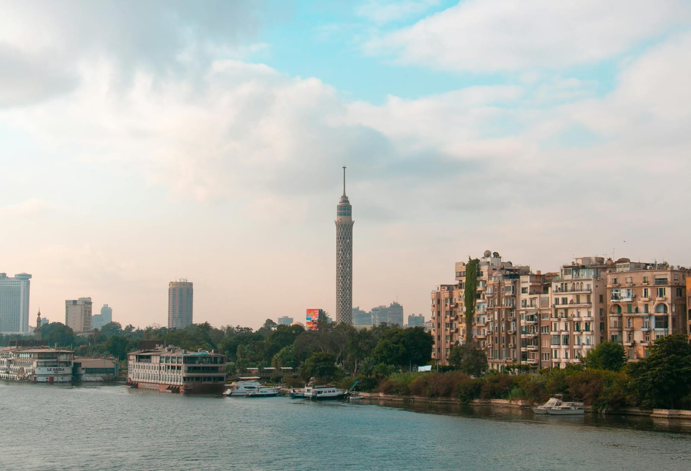

محافظة القاهرة هي عاصمة جمهورية مصر العربية، وأكبر مدينة في البلاد من حيث عدد السكان، وتُعتبر واحدة من أهم المدن التاريخية والثقافية في العالم. تقع القاهرة على ضفاف نهر النيل في شمال مصر، وتجمع بين الحضارة القديمة والتطور الحديث في مشهد فريد يجعلها مدينة لا تشبه أي مكان آخر. تُلقب القاهرة باسم "مدينة الألف مئذنة" بسبب كثرة المساجد التاريخية المنتشرة فيها، والتي تعكس عظمة العمارة الإسلامية عبر العصور المختلفة. كما تُعد المركز السياسي والإداري والاقتصادي لمصر، حيث تضم مقرات الوزارات والسفارات والهيئات الحكومية الكبرى. تاريخ القاهرة تم تأسيس مدينة القاهرة رسميًا عام 969 ميلاديًا على يد القائد جوهر الصقلي بأمر من الدولة الفاطمية، لكنها بُنيت فوق مناطق تاريخية أقدم بكثير مثل الفسطاط والعسكر والقطائع. وعلى مر القرون أصبحت القاهرة مركزًا للحكم والعلم والثقافة في العالم الإسلامي، ومرت عليها عصور مختلفة مثل الفاطميين والأيوبيين والمماليك والعثمانيين. شهدت القاهرة العديد من الأحداث التاريخية المهمة، وكانت دائمًا رمزًا للقوة والحضارة المصرية، كما حافظت على مكانتها حتى العصر الحديث لتصبح واحدة من أكبر العواصم العربية والإفريقية. الموقع الجغرافي تقع محافظة القاهرة في الجزء الشمالي من جمهورية مصر العربية، ويخترقها نهر النيل الذي يمنحها جمالًا طبيعيًا مميزًا. وتحدها محافظة الجيزة من الغرب ومحافظة القليوبية من الشمال وبعض المناطق الصحراوية من الشرق. تتميز القاهرة بموقع استراتيجي جعلها مركزًا مهمًا للتجارة والاقتصاد والسياحة، كما ترتبط بشبكات طرق ومواصلات ضخمة تربطها بجميع محافظات مصر. عدد السكان تُعد القاهرة من أكثر المدن ازدحامًا في إفريقيا والشرق الأوسط، حيث يعيش بها ملايين السكان من مختلف الثقافات والخلفيات. ويعود هذا التكدس السكاني إلى كونها مركزًا للعمل والتعليم والخدمات والفرص المختلفة. ورغم الزحام الشديد، ما زالت القاهرة تحتفظ بحيويتها الكبيرة، حيث لا تنام المدينة تقريبًا وتظل الشوارع والأسواق والمناطق التجارية مليئة بالحركة طوال اليوم. أشهر المعالم السياحية في القاهرة الأهرامات وأبو الهول تُعتبر أهرامات الجيزة القريبة من القاهرة من أعظم عجائب العالم القديم، وتجذب ملايين السياح سنويًا. ويقف تمثال أبو الهول شامخًا ليعكس عظمة الحضارة المصرية القديمة. المتحف المصري يضم المتحف المصري آلاف القطع الأثرية النادرة التي تحكي تاريخ مصر الفرعوني، ومن أشهر مقتنياته كنوز الملك توت عنخ آمون. قلعة صلاح الدين الأيوبي تُعد من أهم القلاع التاريخية في مصر، وقد بناها القائد صلاح الدين الأيوبي لحماية القاهرة. وتضم القلعة مسجد محمد علي الشهير بتصميمه المعماري الرائع. خان الخليلي واحد من أشهر الأسواق الشعبية في مصر والعالم العربي، ويتميز بأجوائه التراثية والمحلات القديمة التي تبيع الهدايا والتحف والمشغولات اليدوية. برج القاهرة يقع في جزيرة الزمالك ويُعتبر من أشهر معالم العاصمة، ويوفر إطلالة بانورامية رائعة على المدينة ونهر النيل. الثقافة والفنون القاهرة هي مركز الثقافة والفنون في مصر، حيث تضم المسارح الكبرى ودور السينما والمتاحف والمكتبات المهمة. كما تُقام بها العديد من المهرجانات الثقافية والفنية سنويًا. وتحتضن القاهرة أيضًا دار الأوبرا المصرية التي تُعتبر مركزًا للفنون الراقية والعروض الموسيقية والمسرحية. التعليم والجامعات تضم القاهرة عددًا كبيرًا من الجامعات والمدارس المرموقة، مثل جامعة القاهرة وعين شمس والأزهر، مما يجعلها مركزًا علميًا وتعليميًا مهمًا في الشرق الأوسط. ويأتي إليها الطلاب من مختلف المحافظات والدول العربية للدراسة في تخصصات متنوعة. الاقتصاد والتجارة تُعتبر القاهرة القلب الاقتصادي لمصر، حيث تنتشر بها البنوك والشركات الكبرى والمراكز التجارية الحديثة. كما تضم العديد من المناطق الصناعية والأسواق الشعبية والمولات الضخمة. وتلعب السياحة دورًا مهمًا في اقتصاد القاهرة بسبب كثرة المعالم الأثرية والتاريخية الموجودة بها. المواصلات تمتلك القاهرة شبكة مواصلات واسعة تشمل مترو الأنفاق والقطارات والأتوبيسات وسيارات الأجرة. ويُعد مترو القاهرة أول مترو أنفاق في إفريقيا والشرق الأوسط، ويساعد ملايين المواطنين يوميًا على التنقل داخل المدينة. نهر النيل في القاهرة يمر نهر النيل عبر القاهرة ويُضيف لها جمالًا خاصًا، حيث تنتشر المراكب النيلية والكورنيش والمطاعم المطلة على النهر. ويُعتبر كورنيش النيل من أشهر أماكن التنزه في العاصمة. القاهرة الحديثة في السنوات الأخيرة شهدت القاهرة تطورًا عمرانيًا كبيرًا، مع إنشاء طرق وكباري ومشروعات حديثة ومدن جديدة مثل العاصمة الإدارية الجديدة، بهدف تقليل الزحام وتحسين مستوى الخدمات. لماذا تُعتبر القاهرة مميزة؟ لأنها تجمع بين التاريخ العريق والحياة الحديثة في وقت واحد، ففيها يمكنك مشاهدة آثار عمرها آلاف السنين بجانب الأبراج الحديثة والمراكز التجارية الضخمة. كما أن تنوعها الثقافي والحضاري يجعلها مدينة مليئة بالحياة والتجارب المختلفة. القاهرة ليست مجرد عاصمة، بل هي مدينة تحكي تاريخ مصر بكل عصورها، وتظل دائمًا رمزًا للحضارة والقوة والثقافة في العالم العربي.